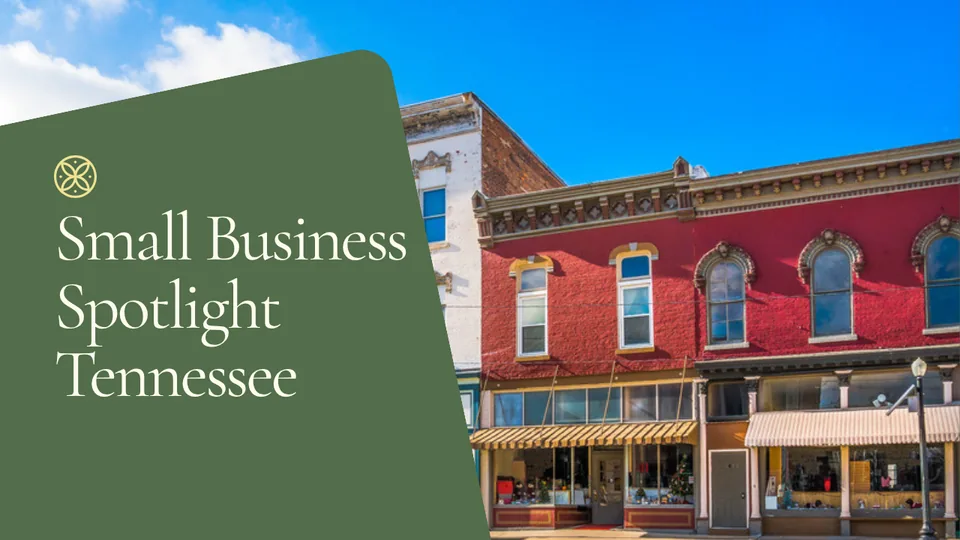

DC Insurance Blog
Straight talk on health insurance, what to know, what to watch out for, and how to find coverage that actually protects you.
Health Insurance for Consultants and High-Income Self-Employed in Tennessee
Earn above the ACA subsidy line? Full-price marketplace premiums can quietly make it the expensive lane. How Tennessee's consultants and high earners compare their real options.
Read the Full PostHealth Insurance for Consultants and High-Income Self-Employed in Tennessee
Left a W-2 job but kept the income? Above the subsidy line the marketplace can quietly cost you. The subsidy cliff, nationwide PPO access, and the three lanes compared.
Health Insurance for Independent Contractors and Tradespeople in Tennessee
Framers, electricians, plumbers, HVAC, on 1099 pay the coverage question lands on you. The workers' comp misconception, supplemental coverage, and the three lanes compared.
Health Insurance for Working Musicians in Tennessee: Coverage Between the Gigs
Session work, touring, and songwriting are 1099 with no employer plan behind them. How Tennessee musicians compare ACA, private PPO, and supplemental lanes.
Owner-Operator Health Insurance in Tennessee: Coverage Built for Life on the Road
Income that swings load to load and coverage that has to travel with you. How Tennessee owner-operators compare ACA and private PPO lanes honestly.
Choosing a Health Insurance Broker in Nashville: What Independent Actually Means
Independent broker, captive agent, or call center, the label determines what you're actually shown. Here's how to tell the difference before you buy.
Health Insurance for Real Estate Agents in Tennessee: What Realtors Need to Know
Agents are 1099 with no brokerage health plan, and commission income complicates the ACA. Here's how Tennessee realtors compare every lane honestly.
Critical Illness Insurance in Tennessee: A Financial Safety Net
A serious diagnosis triggers costs that go far beyond your medical bills. Here's how critical illness insurance works and why it matters for self-employed Tennesseans.
How to Compare Health Insurance Plans in Tennessee: A Practical Step-by-Step Guide
The terminology is dense and the system isn't designed to make comparison easy. This framework lets you evaluate any set of plans methodically and make a decision you understand.
The Real Cost of Cheap Health Insurance in Tennessee
A low monthly premium looks like a win, until something goes wrong. What the premium number doesn't tell you about your actual coverage.
Accident Insurance & Hospital Indemnity in Tennessee: What They Cover and Why They Matter
These plans pay cash directly to you when a covered accident or hospital stay occurs, independent of what your primary health plan pays. Here's how they work and when they make sense.
Special Enrollment Periods in Tennessee: When You Don't Have to Wait for Open Enrollment
Qualifying life events open a 60-day window to change coverage mid-year. Private market plans have no enrollment window at all. Here's what Tennessee residents need to know about both.
Disability Insurance for Self-Employed Tennesseans: Protecting the Income That Drives Everything
When you're self-employed and can't work, the income stops, there's no employer paycheck to bridge the gap. Here's how disability insurance works and what self-employed Tennesseans need to know before shopping for coverage.
How Income Affects Your Health Insurance Premium in Tennessee, And When It Doesn't
On ACA marketplace plans, your income determines your subsidy, and your net premium. On private market plans, it doesn't matter at all. Understanding which lane you're in changes how you plan for coverage costs.
COBRA Insurance in Tennessee: What It Costs, How Long It Lasts, and What to Consider Instead
If you've recently left a job, COBRA is likely the first option you'll hear about. It's legitimate, but for many Tennesseans, it's not the most cost-effective path. Here's how to think through it.
Health Insurance for 1099 Truck Drivers in Tennessee
Owner-operators and independent drivers don't get employer coverage. Here's how ACA marketplace plans and private PPO stack up for life on the road.
Spring Health Insurance Review: Is Your Current Plan Still the Right Fit?
If your income, health, or family situation has changed since you last enrolled, your health coverage may no longer be the right fit. A practical framework for Tennessee residents.

Health Insurance for Small Business Owners in Middle Tennessee
Most small business owners assume competitive health benefits require a traditional group plan. That's not always true, and for many healthy owners in Middle Tennessee, an individually underwritten plan may be stronger.
Supplemental Health Insurance in Tennessee: Accident, Hospital Indemnity, and Critical Illness
Your primary health plan handles the bulk of your care costs. Supplemental coverage fills the financial gaps it leaves open, and for many Tennesseans, those gaps are significant.
PPO vs. EPO: What Tennessee's Self-Employed Need to Know
The difference between PPO and EPO networks affects which doctors you can see, whether you have out-of-network coverage, and what happens when you actually need care.
The 4 Numbers That Actually Define Your Health Insurance Coverage
Most people only look at premium. There are four numbers that together define how your plan behaves when you actually need care, and most people don't know all four.
What is Medical Underwriting? Does it Matter?
If you've looked into private health insurance outside the ACA marketplace, you've encountered this term. Here's what it actually means and when it works in your favor.
ACA Marketplace vs. Medically Underwritten Private PPO Plans
Two lanes, one decision. A side-by-side breakdown of how ACA marketplace plans and private PPO plans compare on pricing, networks, and real-world performance.
Health Insurance for Self-Employed Tennesseans: Complete Guide
Freelancer, 1099 contractor, sole proprietor, or small business owner, you're now your own HR department. Here's every option explained clearly so you can decide with confidence.
Still Have Questions? Let's Talk.
Reading about insurance is one thing. Getting a straight answer about your specific situation is another. Book a free 15-minute appointment, no pressure, no scripts.